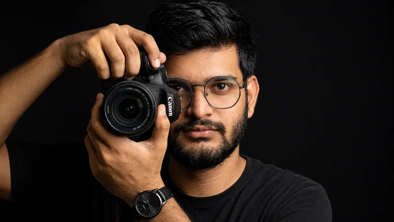

What drives me
More than pastimes
My hobbies are passions that shape who I am and how I see the world. Each one lets me express myself differently and keeps me learning — from the mechanical world of automobiles to the creative realms of photography and music. They've taught me patience, creativity, and the value of pursuing what truly excites me.
Automobilism
I've always been fascinated by cars and the freedom they represent on the open road. There's something special about understanding how engines work and appreciating automotive design — car shows, new models, or simply going for a drive.
The blend of engineering excellence and artistic design in automobiles never ceases to amaze me. For me, automobilism is the thrill of the journey and a passion for mechanical innovation — that's why this page opens with a car I can spin with my fingertips.
Drag to spin — scroll to roll
Mobile Photography
I love capturing moments wherever I go — my phone is always with me to do just that. Mobile photography lets me express creativity and see the world through a different lens, from landscapes to candid street shots.
What excites me most is how accessible it is: no heavy equipment, just my phone and my vision. I'm constantly learning about composition, lighting and editing — preserving memories and sharing my perspective in a creative way.

Gaming
Gaming has been a passion of mine since childhood. Whether it's strategy games that test my problem-solving skills or action-packed adventures that keep my reflexes sharp, I love the challenge and immersion that gaming provides.
From casual mobile games to competitive multiplayer experiences, gaming helps me unwind while staying mentally engaged. It's taught me teamwork, quick decision-making, and the persistence to keep trying until I succeed — skills that translate well into my professional life.
Plane Spotting
There's something mesmerising about watching aircraft cut through the sky — the roar of turbines on approach, the precision of a crosswind landing, and the quiet elegance of a climb-out at sunset. Plane spotting turns every airport visit into a front-row seat to one of the greatest feats of human engineering.
Armed with FlightRadar24 and a camera, I track routes, identify airframes, and photograph everything from narrow-bodies to wide-body heavies. It's a hobby that blends my love for technology, photography, and the sheer thrill of aviation.
Superyacht Enthusiasts
Few things capture the pinnacle of engineering and luxury quite like a superyacht. From sleek 40-metre motor yachts slicing through the Mediterranean to expedition vessels built for polar crossings, every hull tells a story of ambition, design, and craftsmanship on an extraordinary scale.
I follow the world of superyachts — new launches, sea trials, interior reveals, and the shipyards behind them. It's a fascinating intersection of naval architecture, technology, and luxury lifestyle that pushes the boundaries of what's possible on water.